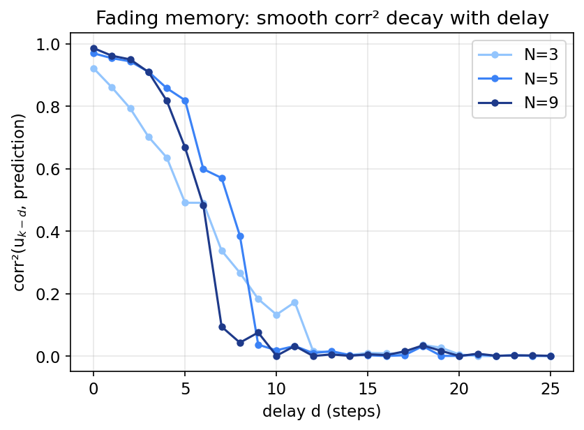
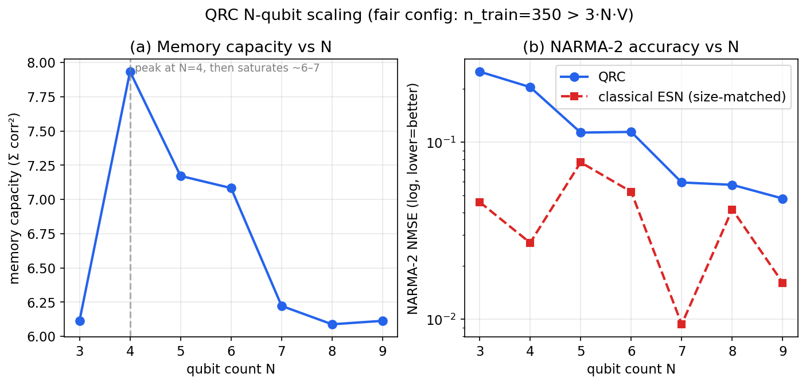
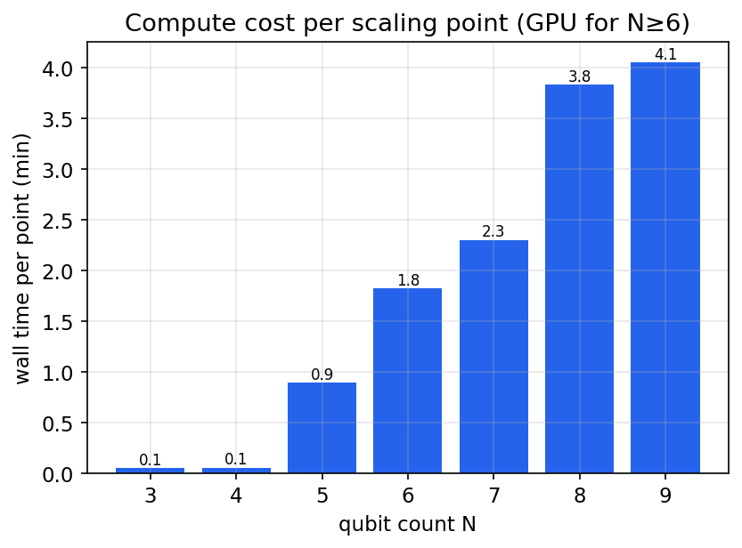

An N-Qubit Scaling Study (3–9 qubits) with GPU-Accelerated Lindblad Dynamics
Abstract. We present a complete, validated simulator for Quantum Reservoir Computing (QRC) on NMR spin networks and a rigorous scaling study across N = 3 … 9 qubits. The simulator implements the open-system (Lindblad) dynamics essential to reservoir computing — dissipation, not coherent evolution alone, produces the fading memory QRC depends on — and is generic in qubit number so hardware size can be measured directly. Four evolution backends are cross-validated to ≲10⁻³. The naïve dense-superoperator method hits a 4ᴺ memory wall (≈550 GB at N=9); an exact sparse Krylov exponential removes it and a GPU (CUDA) implementation accelerates it ≈28×, cutting a full N=9 point from ~1.75 h to ~4 min. Findings: QRC task accuracy improves ~5× with qubit count (NARMA-2 NMSE 0.25→0.048), but memory capacity does not scale (peaks at N=4, saturates ~6–7) and a size-matched classical Echo State Network beats the QRC on NARMA at every size (0/7). The study demonstrates that more qubits help the quantum reservoir, but does not demonstrate quantum advantage over a classical reservoir in this baseline configuration.
Reservoir computing processes temporal signals by driving them into a fixed nonlinear dynamical system and training only a linear readout on its state. Quantum Reservoir Computing uses a quantum system as the reservoir. NMR spin ensembles are a natural substrate: well-characterised Hamiltonians (chemical shifts + J-couplings), RF-pulse input encoding, and — crucially — relaxation (T₁, T₂) that supplies the fading memory reservoir computing requires.
This work supports the CiRA Quantum programme on the SPINQ Gemini Lab, a 3-qubit (¹H/³¹P/¹⁹F) NMR device, and is informed by four reference papers, chiefly Hou et al. 2026 (PRL 136, 120602), a 9-spin liquid-state NMR QRC experiment.
As the number of spins N grows from 3 to 9, holding everything else fixed, do the reservoir's memory capacity and task accuracy improve — and does the quantum reservoir outperform a classical reservoir of comparable size?
N spin-½ nuclei in the weak-coupling NMR regime; rotating-frame Hamiltonian (rad s⁻¹):
H = Σ_i π ν_i σ_z^(i) + Σ_{i<j} (π/2) J_ij σ_z^(i) σ_z^(j)with chemical-shift offsets ν_i (Hz) and scalar couplings J_ij (Hz) — the standard Ising ("ZZ")
coupling of liquid-state NMR. The spinq3 preset encodes real SPINQ parameters; for the
sweep, generic_nqubit(N) generates a plausible N-spin molecule (shifts spread ±120 Hz,
chain-decaying couplings). The 120 Hz spread is deliberate (see §5.3.2).
The single most important modelling choice is to evolve the density matrix under the Lindblad equation, not the state vector under Schrödinger:
dρ/dt = −i[H,ρ] + Σ_k ( L_k ρ L_k† − ½{L_k†L_k, ρ} )per spin: T₁ amplitude damping L = √(1/T₁)·σ₋, and T₂ pure dephasing
L = √(γ_φ/2)·σ_z with γ_φ = 1/T₂ − 1/(2T₁).
Thermal-like product state ρ₀ = ⊗_i (I + ε σ_z)/2, ε = 0.05 (high-temperature NMR limit); ε only scales signal amplitude.
Each input step k follows the six-step framework: (1) encode sₖ∈[0,1] as an RF pulse ρ→UρU† (default θ=arcsin√s; seven functions + multi-nucleus + phase-amplitude available); (2) evolve under Lindblad for τ (30 ms); (3) temporal-multiplex — sample at V virtual nodes within τ; (4) read observables ⟨σₓ,σ_y,σ_z⟩ per qubit per node; (5) optional multi-modal features (spectral/wavelet/entropy from the FID); (6) train a linear readout (ridge, k-fold CV). The reservoir state persists across steps — that persistence, made to fade by dissipation, is the memory.
Because H commutes with every σ_z, ⟨σ_z⟩ is frozen under coherent evolution and relaxes only on the T₁ timescale (~5 s ≫ τ). The computation lives in the transverse components ⟨σₓ⟩, ⟨σ_y⟩ (physically the free-induction-decay signal); the default readout uses all three axes.
A self-contained package (backend/app/qrc/) mirroring the existing
qml/qldpc modules: config, system, encoding, evolution, features,
training, tasks, benchmarks, utils, main. QuTiP is optional and imported lazily.
| backend | method | memory | limit |
|---|---|---|---|
propagator | dense superoperator exp(t·L), reused | 4ᴺ dense | 0.27 GB@N6, 4.3 GB@N7, 550 GB@N9; ~13 min build @N6 |
mesolve | QuTiP adaptive ODE on ρ | 2ᴺ×2ᴺ | stiffness — stalled >60 min at N=8 |
action (CPU) | exact sparse Krylov exp(t·L)·vec | sparse (~0.001%) | ~6.5 s/step @N9 |
gpu | Taylor+substep exp(t·L), sparse CUDA matvecs | sparse on GPU | ~0.23 s/step @N9 |
The dense superoperator is unnecessary: the Liouvillian is ~0.0012% dense at N=9 (851 967 nnz of 262 144²), so the action exp(t·L)·vec is computed by Krylov methods without forming the exponential — removing the memory wall entirely.
A sparse complex64 matvec on the RTX 5070 Ti costs 0.063 ms at N=9, and the state is only ~4 MB. We compute exp(τ·L)·v by sub-stepping with a fixed-order (K=18) Taylor series so ‖(τ/M)·L‖ ≲ 1, using only sparse CUDA matvecs; observables via a precomputed sparse row-vector product. The whole reservoir loop stays on the GPU. Measured: ≈28× over CPU (0.231 vs 6.5 s/step at N=9), matching the exact path to relative 2×10⁻³.
qutip-jax for GPU, but jax has no CUDA
wheels on Windows (jax.devices() → CPU only), so that route silently runs on CPU.
The gpu backend uses torch CUDA instead, which sees the card.Closed-form ridge on GPU (torch): w = (XᵀX + λI)⁻¹Xᵀy, bias unregularised, k-fold CV
over a log-spaced λ grid, with a washout period discarded before fitting.
For the SPINQ 3-qubit preset the gate passes cleanly — corr²(0)=0.96 decaying smoothly to ≈0 by d≈12–15 (Fig. 2). corr²=1 forever ⇒ missing dissipation; corr²=0 immediately ⇒ over-damped/wrong Hamiltonian. The observed smooth decay confirms the Lindblad dynamics are captured correctly.

The four backends agree to 3–4 sig. figs. (e.g. N=4 memory capacity: propagator 7.9028, action 7.9039, mesolve 7.9019; N=5 GPU vs action identical to 4 dp). Dense-exact, sparse-exact, adaptive ODE and GPU-Taylor all converging is strong evidence of correctness; enforced in the test suite.
Running the physics (not trusting the code to "look right") exposed four general traps:
H commutes with every σ_z ⇒ ⟨σ_z⟩ frozen; a σ_z-only readout collapsed corr²(0) to 0.45. Reading transverse σₓ, σ_y (the FID) restored it to 0.92. For Ising-coupled NMR, read transverse.
Transverse magnetisation precesses at the shift frequency, sampled at V/τ. Shifts above the Nyquist (V/2τ ≈ 133 Hz at V=8, τ=30 ms) alias and destroy recall. A ±300 Hz generic molecule failed the gate; capping the spread at 120 Hz fixed it. Shift spread and (V,τ) are coupled constraints.
MC is bounded by min(n_features, n_train), with n_features = 3·N·V. A fixed small n_train starves the metric past a critical N (at V=10, N=5 already has 150 features = 150 samples). An initial n_train=150 sweep showed a spurious MC decline. The reported sweep uses n_train=350 > 3·N·V at all N. For scaling studies, training size must dominate the readout dimension.
The adaptive ODE stalled past N=7 due to the ~5000× fast/slow timescale separation; and a
non-editable install silently shadowed source edits until pip install -e was used. Both are
guarded in the test suite / history.
Config. Generic N-spin molecule; τ=30 ms; V=8; encoding arcsin√s; readout
⟨σₓ,σ_y,σ_z⟩; ridge 3-fold CV; washout 100, n_train 350, n_test 120 (n_train > 3·N·V ≤ 216 at all N);
delays 0–25; seed 42. Backend gpu for N≥6, propagator for N≤5. Total ≈13 min.
| N | dim | Memory capacity | QRC NARMA-2 NMSE | ESN NARMA-2 NMSE | winner | time (min) |
|---|---|---|---|---|---|---|
| 3 | 8 | 6.11 | 2.51×10⁻¹ | 4.60×10⁻² | ESN | 0.1 |
| 4 | 16 | 7.93 | 2.05×10⁻¹ | 2.71×10⁻² | ESN | 0.1 |
| 5 | 32 | 7.17 | 1.14×10⁻¹ | 7.71×10⁻² | ESN | 0.9 |
| 6 | 64 | 7.08 | 1.15×10⁻¹ | 5.26×10⁻² | ESN | 1.8 |
| 7 | 128 | 6.22 | 5.93×10⁻² | 9.38×10⁻³ | ESN | 2.3 |
| 8 | 256 | 6.09 | 5.75×10⁻² | 4.18×10⁻² | ESN | 3.8 |
| 9 | 512 | 6.11 | 4.81×10⁻² | 1.61×10⁻² | ESN | 4.1 |

MC peaks at N=4 (7.93) and saturates near 6–7. This is not the training-set artifact of §5.3.3 (n_train comfortably exceeds the feature count here) — it is a genuine property of this molecule/parameter regime.
QRC NARMA-2 NMSE falls ~5× from 0.25 (N=3) to 0.048 (N=9). On the task, more qubits make the quantum reservoir better.
A size-matched ESN is lower at all seven sizes (0/7 QRC wins), and the gap does not close with N. With this baseline configuration there is no quantum advantage over a classical reservoir.

For the quantum reservoir's own task: yes — NARMA improves ~5× from N=3 to 9. For memory capacity, and for beating classical: no — MC saturates by N≈4 and the ESN is uniformly better.
MC is bounded by the number of independent, readable observables. With a fixed transverse readout (3·N) and V nodes, and shifts capped at Nyquist, added spins become spectrally crowded and contribute correlated rather than independent information; the accessible memory is dominated by the multiplexing structure and relaxation timescales, unchanged as N grows.
The ESN's tanh nonlinearity and dense recurrence make it a strong classical reservoir; the QRC here is limited by a single fixed encoding, Ising-only coupling, and an observable-only readout. This is consistent with the QRC literature, where the value proposition is usually a physical substrate that computes "for free", not an accuracy win over classical simulation.
Hou et al. demonstrate feasibility on real hardware and the role of T₁ as a resource — not a claim of beating classical reservoirs in silico. Our results are consistent: the case for NMR-QRC hardware rests on physical realisation, and this simulator should be used to engineer encoding/molecule/task toward competitive regimes, not as a standalone advantage claim.
Each is now a minutes-long experiment thanks to the GPU backend:
Hardware/software. Windows 11; Python 3.12.10; NVIDIA GeForce RTX 5070 Ti (17 GB); torch 2.10.0+cu128 (CUDA); QuTiP 5.3.0; SciPy 1.17.1; NumPy 2.2.6. Seed 42.
cd backend
pip install -e ".[qrc]"
# Fading-memory gate on the real SPINQ system (run first):
python -m app.qrc.main memory --system spinq3
# NARMA-2 on the GPU backend:
python -m app.qrc.main narma --system spinq3 --evolution gpu
# Full N=3..9 scaling sweep (GPU auto-selected for N>=6):
python scripts/qrc_scaling_run.py # ~13 min; writes qrc_scaling_progress.jsonl
# Regenerate figures:
python scripts/qrc_make_figures.pyValidation: pytest tests/test_qrc.py tests/test_qrc_physics.py (14
tests; physics tests skip without QuTiP/CUDA). Raw data:
backend/qrc_scaling_progress.jsonl (incl. full per-delay MC curves),
backend/qrc_scaling_results.json.
We built and validated a qubit-number-generic QRC simulator with correct open-system physics and a GPU backend that makes 9-qubit studies routine (minutes, not hours). Applied to the SPINQ-motivated scaling question it gives a clear, honest answer: adding qubits improves the quantum reservoir's task accuracy (~5× on NARMA from N=3 to 9), but memory capacity saturates by N≈4 and a size-matched classical ESN wins at every size. The configuration justifies neither over-claiming a quantum advantage nor dismissing the approach — it establishes a validated baseline and the fast tooling needed to search, methodically, for the regimes where NMR-QRC hardware earns its keep.